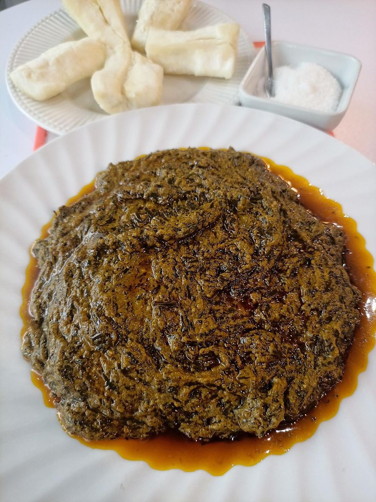

Home
Okok

Desrciption
Okok is a beloved dish of the Beti people in Cameroon’s Centre and South regions. It is made with finely shredded wild leaves (Gnetum africanum), simmered with ground peanuts, palm oil, smoked fish or meat, and aromatic spices. The result is a rich, earthy and slightly nutty stew. It is traditionally served with boiled cassava tuber, whose mild, starchy bite balances the strong flavors of the sauce. Okok is often prepared for family gatherings, weddings and celebrations.
Serves 4 to 6 · Prep: 30 min · Cooking: 1 hour
Ingredients
The stew:
- 500 g shredded okok leaves (fresh, frozen or dried and rehydrated)
- 200 g raw peanuts, roasted, peeled and ground (or 5 tbsp natural peanut butter)
- 3 tbsp red palm oil
- 1 large onion
- 3 garlic cloves
- 2 tbsp ground crayfish
- 1 stock cube, salt, chili pepper to taste
The protein:
- 300 g smoked fish (mackerel or catfish), or smoked or fresh meat
The side:
- 1 kg fresh cassava tubers (or frozen cassava)
Steps
- Prepare the cassava: peel it, cut it into chunks and remove the fibrous core. Boil in salted water for 30 to 40 minutes until tender. Drain and keep warm.
- Prepare the leaves: rinse them well. If using dried leaves, soak them first. Boil for 15 minutes to soften them and remove bitterness, then drain well.
- Make the peanut paste: blend the peanuts with a little water, the onion and the garlic until you get a thick, smooth paste.
- Start the sauce: heat the palm oil in a pot. Add the peanut paste and cook for 5 minutes, stirring often so it does not stick.
- Add flavor: stir in the crayfish, stock cube, chili and a splash of water. Add the smoked fish or meat, broken into pieces.
- AAdd the leaves: mix in the okok leaves and simmer gently for 20 to 30 minutes, stirring now and then, until the sauce is thick and creamy.
- Adjust and serve: taste and correct the salt and spice. Serve hot with the boiled cassava.